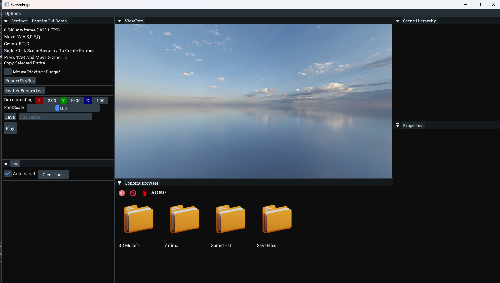
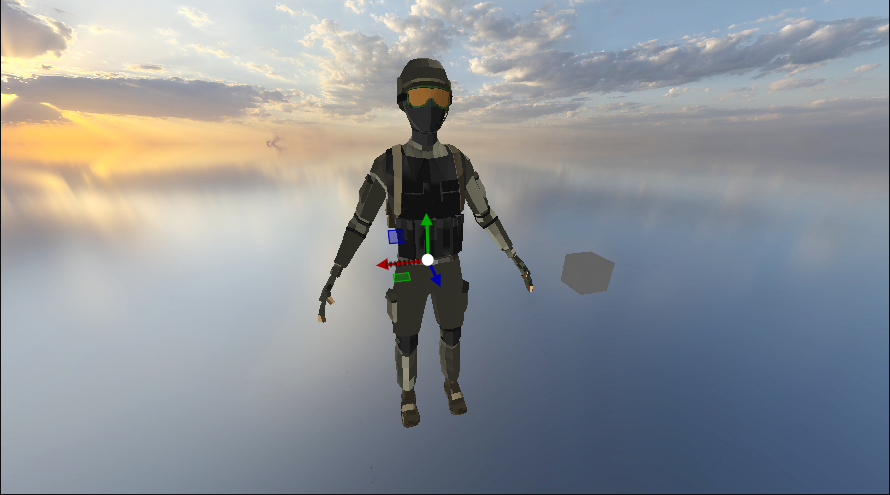
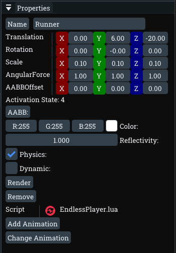
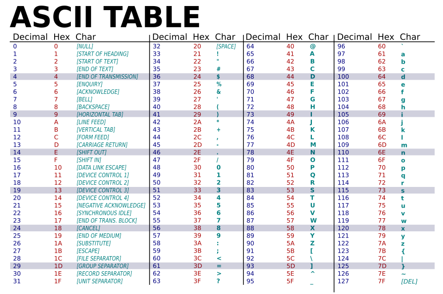

Welcome to the FlawedEngine Editor! This guide introduces the key components of the editor and how to use them effectively.

🎮 Viewport
The viewport is where you interact with the 3D world:

- Use
W,A,S,D,E,Qto navigate - Right-click to rotate the camera
- Left-click to select objects (if mouse picking is enabled)
- Use transformation gizmos with keys:
T(Translate),R(Rotate),G(Scale)
📂 Content Browser

- Opens to the project’s
Assetsfolder - Supports drag-and-drop for
.gltf,.obj, and save files - Right-click for file operations or to add new items
- External file opening supported (e.g., VS Code for Lua)
- Trash icon to delete items, refresh button to sync
🧩 Scene Hierarchy

- Displays all entities in the scene
- Right-click to add shapes or point lights
- Click empty space to deselect all
- Entities highlighted in red are outside the camera's view frustum.
⚙️ Properties Panel

Visible only when an entity is selected:
- Edit Position, Rotation, and Scale
- Set base color if no texture is applied
- Configure physics options (dynamic, forces, AABB)
- Drag-and-drop Lua scripts or animations
🛠️ Settings
- Play button: Runs animations and scripts
- Save button: Saves the scene to
SaveFilesfolder
📜 Log Tab

Displays all engine and script-generated logs.
⌨️ ASCII Table

This chart can help you understand which ASCII code corresponds to which character. Useful for input handling, debugging, and scripting. Note: Use Decimal not Hex
🧠 Tips
- Use example assets for a quick start
- Refer to the Scripting Guide for advanced logic
- Future updates will add automatic script reloading and more
- Note that in my engine -Z is forward and +Y is up